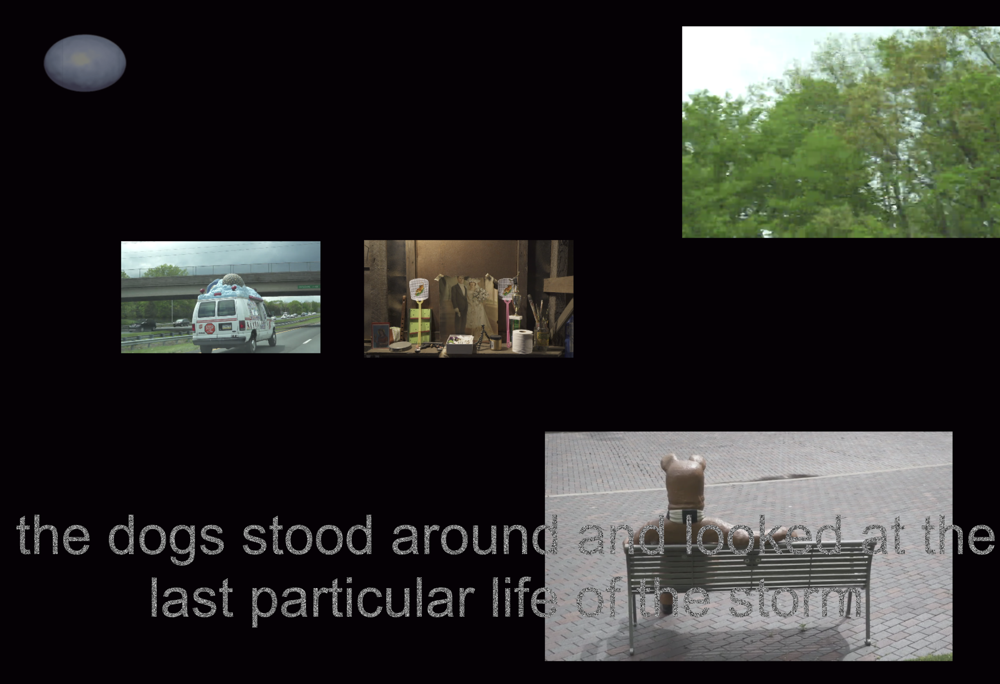

-
POND (Work in Progress)
Online, 2016 – present
pond.is
GitHub
An open platform which employs artificial intelligence to explore the porous nature of the moving image. POND is a long-term project that grows and expands through a series of human-machine collaborations, with the objective to create a rhizomatic space organized by the logic of montage, an archive of cinema in the form of cinema.

-
-
He is a Seed
Collaboration between Victor Hu, Xiaofei Mo, Xu Wang, and Cici Wu
Public spaces, New York, July 2017
you want to bury him / bury into the dirt / but you forget / he is a seed
Mourning and bereavement for a recent death, with the hope that one who had high hopes but took a risky path during his time and suffered for that will be remembered. We organized a seeding memorial in the Socrates Sculpture Park; and placed placards containing his words around Chinatown in New York.
-
-
A Disappearing Act
Exhibition with Su Yu-Hsien and Cici Wu, curated by Xiaofei Mo
Triangle, New York, February 2017
Press Release
Video Documentation (interviewed and produced by SinoVision)
An exhibition of two commissioned projects by Su Yu-Hsien and Cici Wu, both developed from archival research in an effort to reconstruct historical works that were either lost, fragmented never realized, or inherently ephemeral. Thinking about questions surrounding the notion of authorship, the exhibition explores the act of disappearing, the theme of impossible speech, and the boundary between originality and reproducibility: What happens when images begin to circulate in absence of ‘the artist’?

-
-
Zhou Tao: Blue & Red
The publication Zhou Tao: Blue and Red reflects the observation and thinking process along with notes and conversations about Zhou Tao’s video Blue and Red, aiming to outline the topology,the climate and the lights in the video and exploring a way to talk about moving images. This is a book of spectrum exposed to color of light from the reality. This is a book of motion nurtured by the moving images.